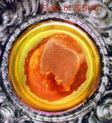
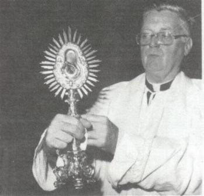

The
LORD mercy is very big and HE manifests it by showing the primordial intention of
saving and converting all the humanity. And with this purpose, the CREATOR
provided the Supernatural Manifestations and HE wants through them, to offer
more opportunity of conversion to people who are cold and who don't believe in
HIS Love and in HIS Divine Friendship.
The
LORD mercy is very big and HE manifests it by showing the primordial intention of
saving and converting all the humanity. And with this purpose, the CREATOR
provided the Supernatural Manifestations and HE wants through them, to offer
more opportunity of conversion to people who are cold and who don't believe in
HIS Love and in HIS Divine Friendship.
There
are known more than fifty Eucharistic Miracles, which happened on various
countries, since the century VIII to our days. Each event is different from the
other, and each story is prettier and fascinating. This is because, everything
that has a relation with the Eucharist undoubtedly has an incommensurable value.
For that reason, in this small space, we will just enhance some of them, with the
intention to engrave all the hearts, the certainty of the seriousness of the
subject, of the beauty of content and above all, of the sacred reality that is
the Holy Communion, the Body, Blood, Soul and Divinity of JESUS, Live and True,
that wants to stay close to us, available in all the Tabernacles of the world, to
propitiate us happiness and well-being in this life, and to concede us a small and comfortable
cottage in the eternity, in HIS glorious Kingdom
of Love.

?LANCIANO, Italy, year 700?
In
about the 700th year of OUR LORD, in a monastery then
named for St. Longinus, the Roman centurion who pierced the side of CHRIST with
a lance, a priest-monk of the Order of St. Basil was celebrating the Holy
Sacrifice of the Mass according to the Latin Rite. Although his name is unknown,
it is reported in an ancient document that he was
?. . . versed in the sciences of the world, but ignorant in that of GOD."
Having suffered from recurrent doubts regarding "transubstantiation? (the
change of the bread and wine into the Body and Blood of CHRIST), he had just
spoken the solemn words of Consecration when the host was suddenly changed into
a circle of flesh, and the wine was transformed into visible blood.
Bewildered
at first by the prodigy which he had witnessed, he eventually regained his
composure, and while weeping joyously, he spoke to the congregation: "O
fortunate witnesses, to whom the BLESSED GOD, to confound my unbelief, has
wished to reveal HIMSELF visible to our eyes! Come, brethren, and marvel at our
GOD, so close to us. Behold the flesh and blood of our Most Beloved CHRIST."
The
congregation rushed to the Altar, marveled at the sight, and went forth to
spread the news to other townspeople who, in turn, came to the church to witness
the Eucharistic Miracle for themselves.
The flesh remained
intact, but the blood in the chalice soon divided into five pellets of unequal
sizes and irregular shapes. The monks decided to weigh the nuggets. On a scale
obtained from the Archbishop, it was discovered that one nugget weighed the same
as all five together, two as much as any three, and the smallest as much as the
largest.
The
Host and the five pellets were placed in a reliquary of artistic ivory. Over the
years they have been in the keeping of three different religious orders. At the
time of the Miracle, the Church of St. Longinus was staffed by Basilian monks,
but it  was
abandoned by them at the close of the 12th century. The property passed quickly
to the Benedictines, and then to the Franciscans who had to demolish the old
church because of damage incurred during earthquakes. The new church that was
built on the site was named after their founder, St. Francis of Assisi.
was
abandoned by them at the close of the 12th century. The property passed quickly
to the Benedictines, and then to the Franciscans who had to demolish the old
church because of damage incurred during earthquakes. The new church that was
built on the site was named after their founder, St. Francis of Assisi.
The
Ivory Reliquary was replaced in 1713 by the one which now exhibits the two
relics. This is a Monstrance of finely sculptured silver and crystal. The flesh
is enclosed in the way a Host is usually enclosed in a Monstrance, and the
nuggets of blood are held in a chalice of artistically etched crystal, which
some believe might be the actual chalice in which the miraculous change occurred.
In
1887 Archbishop Petrarca of Lanciano obtained from Pope Leo XIII a plenary
indulgence in perpetuity for those who visit the Church of the Miracle during
the eight days preceding the annual feast day, the last Sunday of October.
In
February of 1574, Monsignor Rodrigues verified in the presence of reputable
witnesses that the combined weight of the five pellets of congealed blood was
equal to the individual weight of any of them, a fact that was later memoralized
by being chiseled on a marble tablet, dated 1636, which is still located in the
church.
A
number of these authentications have been performed throughout the centuries,
but the last verification, in 1970, is the most scientifically complete, and it
is that examination which we will now consider.
Performed
under strict scientific criteria, the task was assigned to Professor Doctor
Odoardo Linoli, university professor at large in anatomy and pathological
histology, and in chemistry and clinical microscopy, head physician of the
united hospitals of Arezzo, Italy. Professor Linoli availed himself of the services of
Doctor Ruggero Bertelli, a professor emeritus of normal human anatomy at the
University of Siena. Dr. Bertelli not only concurred with all of Professor
Linoli's conclusions, but also presented an official document to that effect.
Assembled
in the sacristy of the Church of St. Francis on November 18, 1970 were the
Archbishop of Lanciano, the Bishop of Ortona, the Provincial of the Friars Minor
Conventual, the chancellor of the Archdiocese, the reverend secretary of the
Archbishop and the entire community of the monastery, together with Professor
Linoli.
On
examining the Ostensorium, it was observed that the lunette containing the flesh
was not hermetically scaled and that the particles of "unleavened bread"
in the center of the flesh, that had remained for many years, had by then
entirely disappeared. The flesh was described as being yellow brown in color,
irregular and roundish in shape, thicker and wrinkled along the periphery,
becoming gradually thinner as it reached the central area where the tissue was
frayed, with small extensions protruding toward the
empty space in the middle. A small sample
was taken from a thicker part for examination in the laboratory of the hospital
in Arezzo.
On
examining the five pellets of blood, it was noted that the prodigy regarding
the
weight of the pellets was no longer evident, as it was last noted in 1574. The
five pellets were found to be quite irregular in form, finely wrinkled, compact,
homogeneous and hard in consistency, being a yellow chestnut color and having
the appearance of chalk. A small sample was taken from the central part of one
pellet for microscopic examination and scientific study. Later, after all the
studies were completed, the fragments of both relics were returned to the church.
The
conclusions reached by Professor Linoli were presented on March 4, 1971 in
detailed medical and scientific terminology to a prestigious assembly, including
ecclesiastical officials, the provincials
and superiors of the Friars Minor Conventual, and representatives of religious
houses in the city as well as civil, judicial, political and military
authorities, representatives of the medical staffs of the city hospitals,
various religious of the city and a number of the city's residents.
The professor's conclusions were later
discussed by the Very Rev. Father Bruno Luciani and Professor Urbano, the chief
analyst of the city hospital of Lanciano and a professor at the University of
Florence. A copy of the detailed report and the minutes of the meeting and
discussions are kept in the archives of the monastery. Authentic copies were
sent to various officials of the Catholic Church and to superiors of the Order,
while another was delivered to His Holiness Pope Paul VI during a private
audience.
As
a result of the histological (microscopic) studies, the following facts were
ascertained and documented:
a)
The
flesh was identified as striated muscular tissue of the myocardium (heart wail),
having no trace whatsoever of any materials or agents used for the preservation
of flesh. Both the flesh and the sample of blood were found to be of human
origin, emphatically excluding the possibility that it was from an animal
species.
b)
The
blood and the flesh were found to belong to the same blood type, AB.
c)
The
blood of the Eucharistic Miracle was found to contain the following minerals:
chlorides, phosphorus, magnesium, potassium, sodium in a lesser degree, and a
greater quantity of calcium.
d)
Proteins
in the clotted blood were found to be normally fractionated, with the same
percentage ratio as those found in normal fresh blood.
 Teacher
Linoli further noted that the blood, had it been taken from a cadaver, would
have altered rapidly through spoilage and decay. His findings conclusively
exclude the possibility of a fraud perpetrated centuries ago. In fact, he
maintained that only a hand experienced in anatomic dissection could have
obtained from a hollow internal organ, the heart, such an expert cut, made
tangentially that is, a round cut, thick on the outer edges and lessening
gradually and uniformly into nothingness in the central area. The doctor ended
his report by stating that while the flesh and blood were conserved in
receptacles not hermetically sealed, they were not damaged, although they had
been exposed to the influences of physical, atmospheric and biological agents.
Teacher
Linoli further noted that the blood, had it been taken from a cadaver, would
have altered rapidly through spoilage and decay. His findings conclusively
exclude the possibility of a fraud perpetrated centuries ago. In fact, he
maintained that only a hand experienced in anatomic dissection could have
obtained from a hollow internal organ, the heart, such an expert cut, made
tangentially that is, a round cut, thick on the outer edges and lessening
gradually and uniformly into nothingness in the central area. The doctor ended
his report by stating that while the flesh and blood were conserved in
receptacles not hermetically sealed, they were not damaged, although they had
been exposed to the influences of physical, atmospheric and biological agents.
The
Ostensorium
containing
the
relics
was previously kept to the side of the Altar in the Church of St.
Francis,
but it is now situated
in a Tabernacle
atop the main Tabernacle of the high Altar. A stairway at the
back
of
the
Altar
enables
the visitor to approach very close to the Tabernacle, which is open in
the back, so that he can clearly see the reliquary containing the flesh and
blood.
The
visitor will notice that the Host appears rosy in color when it is backlighted.
As he gazes, he must undoubtedly reflect upon the countless numbers of others
who have looked upon this awesome Miracle during its more than 1200 years of
existence.
"SANTARÉM, Portugal,
year 1247?
 There lived in the
village of Santarém, 35 miles south of Fátima, a poor woman who was made
miserable by the activities of her unfaithful husband. In her extreme
unhappiness she consulted a sorceress, who promised deliverance from her trials
for the price of a consecrated Host. After many hesitations the woman finally
consented, and visited the Church of St. Stephen. After receiving Holy Communion,
she removed the Host from her mouth and wrapped it in her veil, intending to
take it to the sorceress.
There lived in the
village of Santarém, 35 miles south of Fátima, a poor woman who was made
miserable by the activities of her unfaithful husband. In her extreme
unhappiness she consulted a sorceress, who promised deliverance from her trials
for the price of a consecrated Host. After many hesitations the woman finally
consented, and visited the Church of St. Stephen. After receiving Holy Communion,
she removed the Host from her mouth and wrapped it in her veil, intending to
take it to the sorceress.
But within a few
moments blood began to issue from the Host. The amount of blood increased so
much that it dripped from the cloth and attracted the attention of bystanders.
Seeing blood on the woman's hand and arm and thinking her injured, several
witnesses rushed forward to help. The woman avoided them and ran to her home,
leaving a trail of blood behind her.
Hoping to hide the
bloody veil and its contents, she placed them in a chest; but during the night
she was forced to reveal them to her husband when a mysterious light issued from
the trunk, penetrating the wood and illuminating the whole house. Both knelt in
adoration for the remaining hours until dawn, when the parish priest was
summoned.
News of the
mysterious event spread quickly and attracted countless people who wanted to
contemplate the miracle. Because of the furor, an episcopal investigation was
promptly organized.
The Host was taken in
procession to the Church of St. Stephen, where it was
encased in wax and
secured in the tabernacle. Some time later, when the tabernacle was opened,
another miracle was discovered. The wax that had encased the Host was found
broken into pieces, and the Host was found miraculously enclosed in a crystal
pyx. This was later placed in a gold and silver pear‑shaped monstrance
with a "sunburst" of 33
rays, in which it is still contained.
After
approbation by ecclesiastical authorities, who saw no reason to condemn or
suppress reports of the miracle, the Church of St. Stephen was renamed "The
Church of the Holy Miracle." It is here that the Host is still preserved
and displayed for the admiration and veneration of pilgrims. In the nave of the
church, high up on both sides, are ancient paintings depicting the miracle.
The
Host is somewhat irregularly shaped, with delicate veins running from top to
bottom, where a quantity of blood is collected in the crystal. In the opinion of
Dr. Arthur Hoagland, a New Jersey physician who has observed the miraculous Host
many times over a period of years, the coagulated blood at the bottom of the
crystal sometimes has the color of fresh blood, and at other times that of dried
blood.
This
miracle, which occurred in the early part of the 13th century, has endured for
over 700 years.
?SEEFELD,
Austria, year 1384?
In
the diocese of Innsbruck, among the wooded mountains of the province of Tyrol in Western Austria, lie the village of Seefeld and the parish church of St.
Oswald a church which owes its popularity to a miracle that occurred there on
Holy Thursday in the year 1384.
Tyrol in Western Austria, lie the village of Seefeld and the parish church of St.
Oswald a church which owes its popularity to a miracle that occurred there on
Holy Thursday in the year 1384.
At
that time Knight Milser was the guardian of Schlossberg Castle, located north of
Seefeld. The castle was strategically situated to provide protection for an
important pass and to serve as a border fortress. The knight, it seems, was
filled with pride because of his position and authority; that which occurred
because of his pride was recorded in the Golden
Chronicle of Hohenschwangau:
Knight
Milser came down with his followers to the parish church of Seefeld. He demanded
and a refusal could mean death the large Host; the small one he regarded as too
ordinary for him. He surrounded the frightened priest and the congregation with
his armed men. At the instant Communion of
the
Mass, Milser, his sword drawn and his head covered, came to the left of the high
altar, where he remained standing. The stunned priest handed him the Host, upon
which the ground under the blasphemer suddenly gave way. He sank up to his knees.
Deathly pale, he grasped the altar with both hands, the imprints of which can be
seen to this day.
Knight, filled with terror,
motioned imploringly for the priest to remove the Host from his mouth. As soon
as the priest did so, the floor became firm once again. Immediately Knight
stepped out from the depression that remained, left the church, and hurried to
the monastery of Stams, where he confessed his sin. He did penance and died a
holy death two years later. In accordance with his wishes, he was buried near
the entrance of the chapel of the Blessed Sacrament. The velvet mantle he had
worn during the Holy Thursday Mass was made into a chasuble and given to the
monastery of Stams.
Church records reveal that the Host taken from the knight's mouth was red, as though
saturated with blood. Soon after the miracle, Knight donated a silver Monstrance
made in the Gothic style as a reliquary for the exposition of the miraculous
Host, which is still preserved.
Because
of the great crowds of pilgrims, a hostel was built for their accommodation soon
after the miracle. Their numbers grew so rapidly that the church proved to be
too small. In 1423 Duke Friedrich arranged for the erection of a larger church on
the same site. The building was finished in 1472.
Almost a century later, Emperor Maximilian I was so impressed with the
Seefeld pilgrimages that he pledged to build an adjoining monastery. Begun in
1516, this monastery housed Augustinian monks until 1807. Since that time the
monastery has served as a hotel, which proves to be a convenience for pilgrims.
Archduke Ferdinand II of Tyrol also demonstrated a special interest in the miracle.
In 1574 he built inside the church the Chapel of the Holy Blood, in which the
miraculous Host was enshrined for a time.
As for the scene of the miracle, the hollow through which the knight sank up to his
knees is still kept and shown to visitors. In the interest of safety, the hollow
is normally covered with a grate, which can be lifted for those who wish to
examine it. The sunken area is located on the south side of the altar of the
miracle.
Located in the sanctuary in its original position is the stone altar of the miracle.
This is a goodly distance from the ornate high altar which was added later, when
 the church was enlarged. Directly above the stone altar is a new altar slab
supported by pillars. The whole is arranged so that several inches of space
separate the two slabs, allowing for a clear view of the altar of the miracle.
Still seen on the side of the stone altar are the impressions of Knight's hands,
which sank into the stone at the time of the miracle. These impressions are also
pointed out to visitors.
the church was enlarged. Directly above the stone altar is a new altar slab
supported by pillars. The whole is arranged so that several inches of space
separate the two slabs, allowing for a clear view of the altar of the miracle.
Still seen on the side of the stone altar are the impressions of Knight's hands,
which sank into the stone at the time of the miracle. These impressions are also
pointed out to visitors.
In addition to the hollow in the floor and the altar of the miracle, there is in
the sanctuary the third and remnant principal of the miracle: the Monstrance with
the Miraculous Host. This is kept in a tabernacle situated in the south wall of
the sanctuary near the high altar.
The church is embellished with many reminders
of the miracle. A painted panel of 1502 adorns
the south wall of the choir, while stained-glass windows capture the event.
One of the reliefs in the tympanum above the main entrance is of the miracle,
and a magnificent fresco on the ceiling of the Chapel of the Holy Blood depicts
the priest and Knight at the time of Communion, while hovering angels hold the
Reliquary Monstrance. The church is also resplendent with other priceless
examples of Gothic statuary, carvings and furnishings.
It is not known when the original Church of
St. Oswald was built, but it is mentioned in a chronicle of 1320. The
present church, completed in 1472, has
the distinction of being the only remaining building constructed by the
Innsbruck Builders Guild. It is regarded as the most striking example of North
Tyrolian Gothic architecture.
In 1984 the
Church of St. Oswald celebrated the 600th anniversary of the miracle that
occurred within its privileged sanctuary.
Next
Page
 Previous
Page
Previous
Page
Comes Back to the
Index